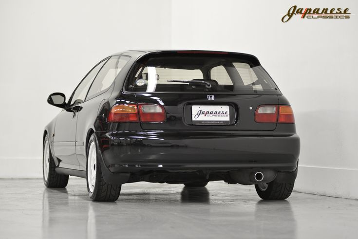
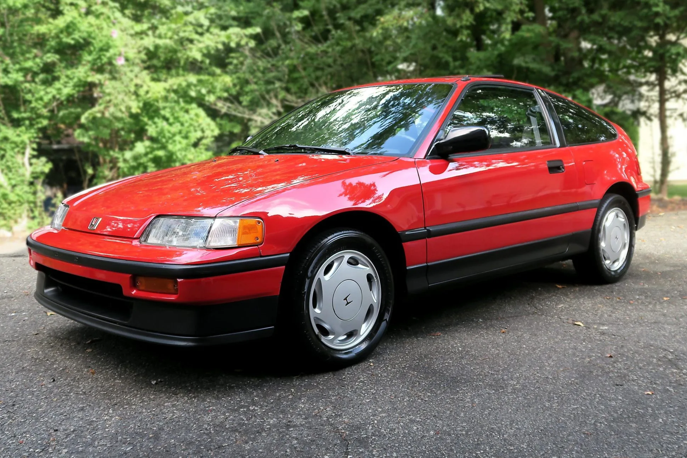

Mijn dolheid op Honda begon al sinds toen ik nog een klein kind was, dat komt vooral door mijn vader omdat hij ook een Honda fanaat is en het zit waarschijnlijk ook in mijn bloed. Hij rijdt al sinds hij zijn rijbewijs heeft in een honda. Zijn eerste Honda is de Honda civic uit 1988.(voor de tijd van de goedkopere digitale camera dus foto's van het internet) 
Mijn vader zijn tweede en favoriete auto was de Honda crx uit 1990, hij houd van die auto zo erg dat hij hem weer ooit zou willen kopen maar ze zijn onvindbaar geworden.(voor de tijd van de goedkopere digitale camera dus foto's van het internet)
Mijn vader zijn derde auto en de auto die hij het langst heeft gehad is de honda civc coupe uit 1999, deze auto had hij veel aan het uiterlijk aangepast,
hij had andere bumpers erop gezet en skirts en hij had de auto verlaagt.


Toen ik werd geboren werdt mijn vsder geforceert om een grotere auto te kopen en wie kon het weten werdt het ook een honda maar in de plaats van een civic werdt het dit keer een honda hrv uit 2005. En toen kwam er een einde aan zijn honda streek en stapte toen over naar volkswagen golf.